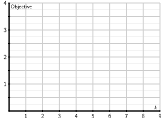

In this section, we introduce a simple algebraic operation, known as the dot product, that helps us measure the length of vectors and the angle formed by a pair of vectors. For two-dimensional vectors \(\vvec\) and \(\wvec\text{,}\) their dot product \(\vvec\cdot\wvec\) is the scalar defined to be
Sketch the vector \(\vvec=\twovec{3}{4}\) below. Then use the Pythagorean theorem to find the length of \(\vvec\text{.}\)
Figure6.1.1.Sketch the vector \(\vvec\) and find its length.
Compute the dot product \(\vvec\cdot\vvec\text{.}\) How is the dot product related to the length of \(\vvec\text{?}\)
Remember that the matrix \(\mattwo0{-1}10\) represents the matrix transformation that rotates vectors counterclockwise by \(90^\circ\text{.}\) Beginning with the vector \(\vvec = \twovec34\text{,}\) find \(\wvec\text{,}\) the result of rotating \(\vvec\) by \(90^\circ\text{,}\) and sketch it above.
What is the dot product \(\vvec\cdot\wvec\text{?}\)
Suppose that \(\vvec=\twovec ab\text{.}\) Find the vector \(\wvec\) that results from rotating \(\vvec\) by \(90^\circ\) and find the dot product \(\vvec\cdot\wvec\text{.}\)
Suppose that \(\vvec\) and \(\wvec\) are two perpendicular vectors. What do you think their dot product \(\vvec\cdot\wvec\) is?
Subsection6.1.1The geometry of the dot product
The dot product is defined, more generally, for any two \(m\)-dimensional vectors:
The important thing to remember is that the dot product will produce a scalar. In other words, the two vectors are combined in such a way as to create a number, and, as well see, this number conveys useful geometric information.
Example6.1.2.
We compute the dot product between two four-dimensional vectors as
As with ordinary multiplication, the dot product enjoys some familiar algebraic properties, such as commutativity and distributivity. More specifically, it doesnt matter in which order we compute the dot product of two vectors:
The most important property of the dot product, and the real reason for our interest in it, is that it gives us geometric information about vectors and their relationship to one another. Lets first think about the length of a vector by looking at the vector \(\vvec = \twovec32\) as shown in Figure6.1.4
We may find the length of this vector using the Pythagorean theorem since the vector forms the hypotenuse of a right triangle having a horizontal leg of length 3 and a vertical leg of length 2. The length of \(\vvec\text{,}\) which we denote as \(\len{\vvec}\text{,}\) is therefore \(\len{\vvec} = \sqrt{3^2 +
2^2} = \sqrt{13}\text{.}\) Now notice that the dot product of \(\vvec\) with itself is
where \(\theta\) is the angle between \(\vvec\) and \(\wvec\text{.}\)
Activity6.1.2.
Sketch the vectors \(\vvec=\twovec32\) and \(\wvec=\twovec{-1}3\) using Figure6.1.6.
Figure6.1.6.Sketch the vectors \(\vvec\) and \(\wvec\) here.
Find the lengths \(\len{\vvec}\) and \(\len{\wvec}\) using the dot product.
Find the dot product \(\vvec\cdot\wvec\) and use it to find the angle between \(\vvec\) and \(\wvec\text{.}\)
Consider the vector \(\xvec = \twovec{-2}{3}\text{.}\) Include it in your sketch in Figure6.1.6 and find the angle between \(\vvec\) and \(\xvec\text{.}\)
If two vectors are perpendicular, what can you say about their dot product? Explain your thinking.
For what value of \(k\) is the vector \(\twovec6k\) perpendicular to \(\wvec\text{?}\)
Sage can be used to find lengths of vectors and their dot products. For instance, if v and w are vectors, then v.norm() gives the length of v and v * w gives \(\vvec\cdot\wvec\text{.}\)
Use the Sage cell below to find \(\len{\vvec}\text{,}\)\(\len{\wvec}\text{,}\)\(\vvec\cdot\wvec\text{,}\) and the angle between \(\vvec\) and \(\wvec\text{.}\) You may use arccos to find the angles measure expressed in radians.
As we move forward, it will be important for us to recognize when vectors are perpendicular to one another. For instance, when vectors \(\vvec\) and \(\wvec\) are perpendicular, the angle between them \(\theta=90^\circ\) and we have
Therefore, the dot product between perpendicular vectors must be zero. This leads to the following definition.
Definition6.1.7.
We say that vectors \(\vvec\) and \(\wvec\) are orthogonal if \(\vvec\cdot\wvec=0\text{.}\)
In practical terms, two perpendicular vectors are orthogonal. However, the concept of orthogonality is somewhat more general because it allows one or both of the vectors to be the zero vector \(\zerovec\text{.}\)
Weve now seen that the dot product gives us geometric information about vectors. It also provides a way to compare vectors. For example, consider the vectors \(\uvec\text{,}\)\(\vvec\text{,}\) and \(\wvec\text{,}\) shown in Figure6.1.8. The vectors \(\vvec\) and \(\wvec\) seem somewhat similar as the directions they define are nearly the same. By comparison, \(\uvec\) appears rather dissimilar to both \(\vvec\) and \(\wvec\text{.}\) We will measure the similarity of vectors by finding the angle between them; the smaller the angle, the more similar the vectors.
Figure6.1.8.Which of the vectors are most similar?
Activity6.1.3.
This activity explores two further uses of the dot product beginning with the similarity of vectors.
Our first task is to assess the similarity between various Wikipedia articles by forming vectors from each of five articles. In particular, one may download the text from a Wikipedia article, remove common words, such as the and and, count the number of times the remaining words appear in the article, and represent these counts in a vector.
For example, evaluate the following cell that loads some special commands along with the vectors constructed from the Wikipedia articles on Veterans Day, Memorial Day, Labor Day, the Golden Globe Awards, and the Super Bowl. For each of the five articles, you will see a list of the number of times 10 words appear in these articles. For instance, the word act appears 3 times in the Veterans Day article and 0 times in the Labor Day article. For each of the five articles, we obtain 604-dimensional vectors, which are named veterans, memorial, labor, golden, and super.
Suppose that two articles have no words in common. What is the value of the dot product between their corresponding vectors? What does this say about the angle between these vectors?
Suppose there are two articles on the same subject, yet one article is twice as long. What approximate relationship would you expect to hold between the two vectors? What does this say about the angle between them?
Use the Sage cell below to find the angle between the vector veterans and the other four vectors. To express the angle in degrees, use the degrees(x) command, which gives the number of degrees in x radians.
Compare the four angles you have found and discuss what they mean about the similarity between the Veterans Day article and the other four. How do your findings reflect the nature of these five events?
Vectors are often used to represent how a quantity changes over time. For instance, the vector \(\svec=\fourvec{78.3}{81.2}{82.1}{79.0}\) might represent the value of a companys stock on four consecutive days. When interpreted in this way, we call the vector a time series. Evaluate the Sage cell below to see a representation of two time series \(\svec_1\text{,}\) in blue, and \(\svec_2\text{,}\) in orange, which we imagine represent the value of two stocks over a period of time. (This cell relies on some data loaded by the first cell in this activity.) Even though one stock has a higher value than the other, the two appear to be related since they seem to rise and fall at roughly similar ways. We often say that they are correlated, and we would like to measure the degree to which they are correlated.
In order to compare the ways in which they rise and fall, we will first demean the time series; that is, for each time series, we will subtract its average value to obtain a new time series. There is a command, demean(s), that returns the demeaned time series of s. Use the Sage cell below to demean the series \(\svec_1\) and \(\svec_2\) and plot.
If the demeaned series are \(\tilde{\svec}_1\) and \(\tilde{\svec}_2\text{,}\) then the correlation between \(\svec_1\) and \(\svec_2\) is defined to be
Given the geometric interpretation of the dot product, the correlation equals the cosine of the angle between the demeaned time series, and therefore \(\corr(\svec_1,\svec_2)\) is between -1 and 1.
Find the correlation between \(\svec_1\) and \(\svec_2\text{.}\)
Suppose that two time series are such that their demeaned time series are scalar multiples of one another, as in Figure6.1.9
Figure6.1.9.On the left, the demeaned time series are positive scalar multiples of one another. On the right, they are negative scalar multiples.
For instance, suppose we have time series \(\tvec_1\) and \(\tvec_2\) whose demeaned time series \(\tilde{\tvec}_1\) and \(\tilde{\tvec}_2\) are positive scalar multiples of one another. What is the angle between the demeaned vectors? What does this say about the correlation \(\corr(\tvec_1, \tvec_2)\text{?}\)
Suppose the demeaned time series \(\tilde{\tvec}_1\) and \(\tilde{\tvec}_2\) are negative scalar multiples of one another, what is the angle between the demeaned vectors? What does this say about the correlation \(\corr(\tvec_1, \tvec_2)\text{?}\)
Use the Sage cell below to plot the time series \(\svec_1\) and \(\svec_3\) and find their correlation.
Use the Sage cell below to plot the time series \(\svec_1\) and \(\svec_4\) and find their correlation.
Subsection6.1.2\(k\)-means clustering
A typical problem in data science is to find some underlying patterns in a dataset. Suppose, for instance, that we have the set of 177 data points plotted in Figure6.1.10. Notice that the points are not scattered around haphazardly; instead, they seem to form clusters. Our goal here is to develop a strategy for detecting the clusters.
Figure6.1.10.A set of 177 data points.
To see how this could be useful, suppose we have medical data describing a group of patients, some of whom have been diagnosed with a specific condition, such as diabetes. Perhaps we have a record of age, weight, blood sugar, cholesterol, and other attributes for each patient. It could be that the data points for the group diagnosed as having the condition form a cluster that is somewhat distinct from the rest of the data. Suppose that we are able to identify that cluster and that we are then presented with a new patient that has not been tested for the condition. If the attributes for that patient place them in that cluster, we might identify them as being at risk for the condition and prioritize them for appropriate screenings.
If there are many attributes for each patient, the data may be high-dimensional and not easily visualized. We would therefore like to develop an algorithm that separates the data points into clusters without human intervention. We call the result a clustering.
The next activity introduces a technique, called \(k\)-means clustering, that helps us find clusterings. To do so, we will view the data points as vectors so that the distance between two data points equals the length of the vector joining them. That is, if two points are represented by the vectors \(\vvec\) and \(\wvec\text{,}\) then the distance between the points is \(\len{\vvec-\wvec}\text{.}\)
Activity6.1.4.
To begin, we identify the centroid, or the average, of a set of vectors \(\vvec_1, \vvec_2, \ldots,\vvec_n\) as
and sketch the vectors and the centroid using Figure6.1.11. You may wish to simply plot the points represented by the tips of the vectors rather than drawing the vectors themselves.
Figure6.1.11.The vectors \(\vvec_1\text{,}\)\(\vvec_2\text{,}\)\(\vvec_3\) and their centroid.
Notice that the centroid lies in the center of the points defined by the vectors.
Now well illustrate an algorithm that forms clusterings. To begin, consider the following points, represented as vectors,
Figure6.1.12.We will group this set of four points into two clusters.
Suppose that we would like to group these points into \(k=2\) clusters. (Later on, well see how to choose an appropriate value for \(k\text{,}\) the number of clusters.) We begin by choosing two points \(c_1\) and \(c_2\) at random and declaring them to be the centers of the two clusters.
For example, suppose we randomly choose \(c_1=\vvec_2\) and \(c_2=\vvec_3\) as the center of two clusters. The cluster centered on \(c_1=\vvec_2\) will be the set of points that are closer to \(c_1=\vvec_2\) than to \(c_2=\vvec_3\text{.}\) Determine which of the four data points are in this cluster, which we denote by \(C_1\text{,}\) and circle them in Figure6.1.12.
The second cluster will consist of the data points that are closer to \(c_2=\vvec_3\) than \(c_1=\vvec_2\text{.}\) Determine which of the four points are in this cluster, which we denote by \(C_2\text{,}\) and circle them in Figure6.1.12.
We now have a clustering with two clusters, but we will try to improve upon it in the following way. First, find the centroids of the two clusters; that is, redefine \(c_1\) to be the centroid of cluster \(C_1\) and \(c_2\) to be the centroid of \(C_2\text{.}\) Find those centroids and indicate them in Figure6.1.13
Figure6.1.13.Indicate the new centroids and clusters.
Now update the cluster \(C_1\) to be the set of points closer to \(c_1\) than \(c_2\text{.}\) Update the cluster \(C_2\) in a similar way and indicate the clusters in Figure6.1.13.
Lets perform this last step again. That is, update the centroids \(c_1\) and \(c_2\) from the new clusters and then update the clusters \(C_1\) and \(C_2\text{.}\) Indicate your centroids and clusters in Figure6.1.14.
Figure6.1.14.Indicate the new centroids and clusters.
Notice that this last step produces the same set of clusters so there is no point in repeating it. We declare this to be our final clustering.
This activity demonstrates our algorithm for finding a clustering. We first choose a value \(k\) and seek to break the data points into \(k\) clusters. The algorithm proceeds in the following way:
Choose \(k\) points \(c_1, c_2, \ldots, c_k\) at random from our dataset.
Construct the cluster \(C_1\) as the set of data points closest to \(c_1\text{,}\)\(C_2\) as the set of data points closest to \(c_2\text{,}\) and so forth.
Repeat the following until the clusters no longer change:
Find the centroids \(c_1, c_2,\ldots,c_k\) of the current clusters.
Update the clusters \(C_1,C_2,\ldots,C_k\text{.}\)
The clusterings we find depend on the initial random choice of points \(c_1, c_2,\ldots, c_k\text{.}\) For instance, in the previous activity, we arrived, with the initial choice \(c_1=
\vvec_2\) and \(c_2=\vvec_3\text{,}\) at the clustering:
Is there a way that we can determine which clustering is the better of the two? It seems like a better clustering will be one for which the points in a cluster are, on average, closer to the centroid of their cluster. If we have a clustering, we therefore define a function, called the objective, which measures the average of the square of the distance from each point to the centroid of the cluster to which that point belongs. A clustering with a smaller objective will have clusters more tightly centered around their centroids, which should result in a better clustering.
with centroids \(c_1=\vvec_1\) and \(c_2=\twovec{5/3}{5/3}\text{.}\) Find the objective of this clustering.
We have now seen two clusterings and computed their objectives. Recall that our dataset is shown in Figure6.1.12. Which of the two clusterings feels like the better fit? How is this fit reflected in the values of the objectives?
Evaluating the following cell will load and display a dataset consisting of 177 data points. This dataset has the name data. Given this plot of the data, what would seem like a reasonable number of clusters?
In the following cell, you may choose a value of \(k\) and then run the algorithm to determine and display a clustering and its objective. If you run the algorithm a few times with the same value of \(k\text{,}\) you will likely see different clusterings having different objectives. This is natural since our algorithm starts by making a random choice of points \(c_1,c_2,\ldots,c_k\text{,}\) and a different choices may lead to different clusterings. Choose a value of \(k\) and run the algorithm a few times. Notice that clusterings having lower objectives seem to fit the data better. Repeat this experiment with a few different values of \(k\text{.}\)
For a given value of \(k\text{,}\) our strategy is to run the algorithm several times and choose the clustering with the smallest objective. After choosing a value of \(k\text{,}\) the following cell will run the algorithm 10 times and display the clustering having the smallest objective.
For each value of \(k\) between 2 and 9, find the clustering having the smallest objective and plot your findings in Figure6.1.15.

Figure6.1.15.Construct a plot of the minimal objective as it depends on the choice of \(k\text{.}\)
This plot is called an elbow plot due to its shape. Notice how the objective decreases sharply when \(k\) is small and then flattens out. This leads to a location, called the elbow, where the objective transitions from being sharply decreasing to relatively flat. This means that increasing \(k\) beyond the elbow does not significantly decrease the objective, which makes the elbow a good choice for \(k\text{.}\)
Where does the elbow occur in your plot above? How does this compare to the best value of \(k\) that you estimated by simply looking at the data in Itemc.
Of course, we could increase \(k\) until each data point is its own cluster. However, this defeats the point of the technique, which is to group together nearby data points in the hope that they share common features, thus providing insight into the structure of the data.
We have now seen how our algorithm and the objective identify a reasonable value for \(k\text{,}\) the number of the clusters, and produce a good clustering having \(k\) clusters. Notice that we dont claim to have found the best clustering as the true test of any clustering will be in how it helps us understand the dataset and helps us make predictions about any new data that we may encounter.
Subsection6.1.3Summary
This section introduced the dot product and the ability to investigate geometric relationships between vectors.
The dot product of two vectors \(\vvec\) and \(\wvec\) satisfies these properties:
What is the angle between \(\vvec\) and \(\wvec\text{?}\)
Suppose that \(t\) is a scalar. Find the value of \(t\) for which \(\vvec\) is orthogonal to \(\wvec+t\vvec\text{?}\)
4.
Suppose that \(\vvec=3\wvec\text{.}\)
What is the relationship between \(\vvec\cdot\vvec\) and \(\wvec\cdot\wvec\text{?}\)
What is the relationship between \(\len{\vvec}\) and \(\len{\wvec}\text{?}\)
If \(\vvec=s\wvec\) for some scalar \(s\text{,}\) what is the relationship between \(\vvec\cdot\vvec\) and \(\wvec\cdot\wvec\text{?}\) What is the relationship between \(\len{\vvec}\) and \(\len{\wvec}\text{?}\)
Suppose that \(\vvec=\threevec{3}{-2}2\text{.}\) Find a scalar \(s\) so that \(s\vvec\) has length 1.
5.
Given vectors \(\vvec\) and \(\wvec\text{,}\) explain why
and a general vector \(\xvec=\threevec xyz\text{.}\)
Write an equation in terms of \(x\text{,}\)\(y\text{,}\) and \(z\) that describes all the vectors \(\xvec\) orthogonal to \(\vvec_1\text{.}\)
Write a linear system that describes all the vectors \(\xvec\) orthogonal to both \(\vvec_1\) and \(\vvec_2\text{.}\)
Write the solution set to this linear system in parametric form. What type of geometric object does this solution set represent? Indicate with a rough sketch why this makes sense.
Give a parametric description of all vectors orthogonal to \(\vvec_1\text{.}\) What type of geometric object does this represent? Indicate with a rough sketch why this makes sense.
7.
Explain your responses to these questions.
Suppose that \(\vvec\) is orthogonal to both \(\wvec_1\) and \(\wvec_2\text{.}\) Can you guarantee that \(\vvec\) is also orthogonal to any linear combination \(c_1\wvec_1+c_2\wvec_2\text{?}\)
Suppose that \(\vvec\) is orthogonal to itself. What can you say about \(\vvec\text{?}\)
8.
Suppose that \(\vvec_1\text{,}\)\(\vvec_2\text{,}\) and \(\vvec_3\) form a basis for \(\real^3\) and that each vector is orthogonal to the other two. Suppose also that \(\vvec\) is another vector in \(\real^3\text{.}\)
Explain why \(\vvec=c_1\vvec_1+c_2\vvec_2+c_3\vvec_3\) for some scalars \(c_1\text{,}\)\(c_2\text{,}\) and \(c_3\text{.}\)
form a basis for \(\real^3\) and that each vector is orthogonal to the other two. Use what youve discovered in this problem to write the vector \(\vvec=\threevec35{-1}\) as a linear combination of \(\vvec_1\text{,}\)\(\vvec_2\text{,}\) and \(\vvec_3\text{.}\)
9.
Suppose that \(\vvec_1\text{,}\)\(\vvec_2\text{,}\) and \(\vvec_3\) are three nonzero vectors that are pairwise orthogonal; that is, each vector is orthogonal to the other two.
Explain why \(\vvec_3\) cannot be a linear combination of \(\vvec_1\) and \(\vvec_2\text{.}\)
Explain why this set of three vectors is linearly independent.
10.
In the next chapter, we will consider certain \(n\times n\) matrices \(A\) and define a function
where \(\xvec\) is a vector in \(\real^n\text{.}\)
Suppose that \(A=\begin{bmatrix}
1 \amp 2 \\
2 \amp 1 \\
\end{bmatrix}\) and \(\xvec=\twovec21\text{.}\) Evaluate \(q(\xvec) = \xvec\cdot(A\xvec)\text{.}\)
For a general vector \(\xvec=\twovec xy\text{,}\) evaluate \(q(\xvec) = \xvec\cdot(A\xvec)\) as an expression involving \(x\) and \(y\text{.}\)
Suppose that \(\vvec\) is an eigenvector of a matrix \(A\) with associated eigenvalue \(\lambda\) and that \(\vvec\) has length 1. What is the value of the function \(q(\vvec)\text{?}\)
11.
Back in Section1.1, we saw that equations of the form \(Ax+By = C\) represent lines in the plane. In this exercise, we will see how this expression arises geometrically.
Figure6.1.16.A line, a point \(\pvec\) on the line, and a vector \(\nvec\) perpendicular to the line.
Find the slope and vertical intercept of the line shown in Figure6.1.16. Then write an equation for the line in the form \(y=mx+b\text{.}\)
Suppose that \(\pvec\) is a point on the line, that \(\nvec\) is a vector perpendicular to the line, and that \(\xvec=\twovec xy\) is a general point on the line. Sketch the vector \(\xvec-\pvec\) and describe the angle between this vector and the vector \(\nvec\text{.}\)
What is the value of the dot product \(\nvec\cdot(\xvec
- \pvec)\text{?}\)
Explain why the equation of the line can be written in the form \(\nvec\cdot\xvec = \nvec\cdot\pvec\text{.}\)
Identify the vectors \(\pvec\) and \(\nvec\) for the line illustrated in Figure6.1.16 and use them to write the equation of the line in terms of \(x\) and \(y\text{.}\) Verify that this expression is algebraically equivalent to the equation \(y=mx+b\) that you earlier found for this line.
Explain why any line in the plane can be described by an equation having the form \(Ax+By = C\text{.}\) What is the significance of the vector \(\twovec AB\text{?}\)